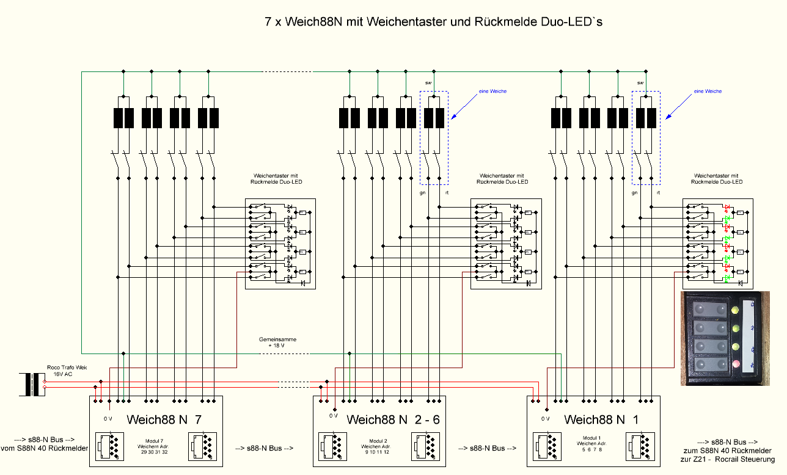

Weichen Steuerung
home...Weichensteuerung mit Taster
Meine alte Weichensteuerung mit Taster und Weichenstatus Duo-LED, grün Weiche gerade, rot abbiegen. Voraussetzung es werden Weichen mit Endabschaltung verwendet.Als LED Vorwiederstand wurde ein 2,2K verwendet.


Erweiterung Weichensteuerung mit Weich88N
Nachrüstung mit der Weichen Steuerung Weich88N von: Weich88-N(externer Link)dadurch ist eine Steuerung der Weichen und Rückmeldung des Weichenstatus über den s88-N Bus vom PC aus möglich.

{kind=link}
. . . in Arbeit


mehrere Roco 10761/10764 Verstärker an einer Steuerung:
LokMaus/Multimaus oder Z21

Roco 10761/10764 diese sind günstig, da je einer in jedem Roco Startset enthalten ist.
Ein öffnen des Verstärker/Booster ist nicht notwendig.
Es kann eine 4polige Leitung mit RJ10 Stecker von einen Booster OUT, zu weiteren 2-4 Boostern OUT, einfach alle 4 Pins parallel (Booster Bus) erstellt werden.
An den zusätzlichen Master/Slave Eingängen darf dann nichts angesteckt werden, Zerstörungsgefahr (mit Klebeband abkleben).
Umbau einer ROCO Zentrale zu einem Booster
Umbau der ROCO Zentrale zu einem Booster(externer Link)
- JoFri
- Stand: 05.2020